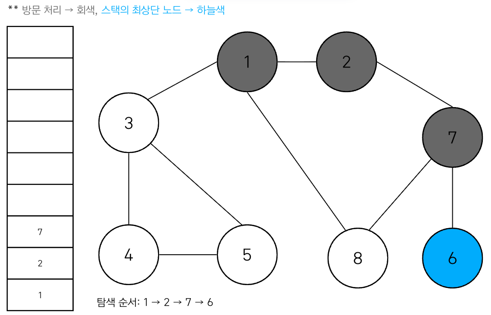

Lecture 3-1. Backtracking#
백트레킹 (backtracking)이란, 가능한 해 (candidate)를 하나씩 선택하면서 탐색하다가, 조건에 맞지 않으면 즉시 되돌아가서 다른 후보를 탐색하는 기법이다. Brute-force와 다른 점이라면, brute-force는 가능한 모든 경우를 끝까지 다 확인하지만, backtracking은 “조건에 맞지 않는 경우”를 발견하면 가지치기 (pruning)으로 탐색의 양을 줄이는 것에 있다. 즉,DFS (깊이 우선 탐색) 구조와 비슷하며, 주로 스택(Stack) 구조와 재귀 호출로 구현될 수 있다. Backtracking의 목표는 모든 가능한 해를 생성하거나, 특정 조건을 만족하는 해를 찾는 것이다. Backtracking의 기본원리는 “선택(Choose) -> 탐색 (Explore) -> 되돌리기 (Unchoose/Backtack)” 이다.
Backtracking 기본 원리
Step 1. 선택 (Choose): 현재 단계에서 하나의 후보를 path에 추가 Step 2. 탐색 (Explore): 재귀 호출로 다음 단계 진행 Step 3. 되돌리기 (Unchoose / Backtrack): path에서 방금 선택한 후보를 제거 (pop)
예를 들어, backtracking은 아래 코드의 기본 구조를 따른다고 생각할 수 있다.
def backtracking(start):
for i in range(start, len(arr)):
path.append(arr[i]) # 후보 선택 (Choose): start 현재 index 후보 선택
backtracking(i + 1) # 다음 단계 탐색 (Explore): 다음에 탐색할 index 삽입
path.pop() # 상태 복원 (Unchoose): 되돌리기가 없으면 중복된 해가 생기거나 상태가 꼬이게 된다.
pop이나 되돌리기를 해야 해의 중복 방지와 정확한 상태 복원이 가능하다. 아래 그림을 잘 숙지해두면 해당 코드를 이용해 다양한 문제에 적용하여 풀 수 있을 것이다.
{kind=link}
Combination (조합)#
조합(Combination)은 원소의 순서는 고려하지 않고, 뽑을 개수(depth = k)가 정해진 경우에 사용하는 Backtracking 패턴이다.
즉, 순서가 달라도 같은 결과로 취급되며, 따라서 중복을 어떻게 처리하느냐에 따라 코드가 달라진다.
Combination without repetition (중복 불허)#
예를 들어, 카드 [1, 2, 3]에서 2개를 뽑는 경우를 생각해보자.
조합은 순서를 고려하지 않기 때문에, for 반복문에서 현재 인덱스보다 작은 인덱스는 다시 방문하지 않는다.
작은 인덱스에서 이미 동일한 결과가 만들어졌기 때문이다.
예: index=1일 때
[array[0], array[1]] = [1, 2]가 이미 생성되었으므로,[2, 1]은 다시 만들 필요가 없다.

# Combination (순서 무관, 중복 불허, 길이 k)
array = [1, 2, 3]
k = 2
path = []
def combination(start, depth):
if depth == k:
print(path)
return
for i in range(start, len(array)):
path.append(array[i]) # 선택 (Choose)
combination(i + 1, depth + 1) # 다음 원소 탐색 (Explore)
path.pop() # 상태 복원 (Unchoose)
print(f"Combination result of {array} with k={k}:")
combination(0, 0)
print()
Combination without repetition result of [1, 2, 3] with k=2:
[1, 2]
[1, 3]
[2, 3]
Combination with repetition (중복 허용)#
만약 같은 원소를 여러 번 선택할 수 있다면, combination(i + 1, depth + 1) 대신 combination(i, depth + 1)을 호출하면 된다.
Combination result of [1, 2, 3] with k=2:
[1, 1]
[1, 2]
[1, 3]
[2, 2]
[2, 3]
[3, 3]
저번 시간에 배웠듯이, 조합 역시 DFS 기반으로 재귀 호출을 반복하며, 내부적으로는 stack 구조로 동작한다. 아래 그림처럼 함수가 호출될 때 스택에 쌓이고, 종료되면 스택에서 빠져나오면서 상태가 되돌려진다.

Multiset (중복 원소가 있는 집합)#
Multiset이란 입력에 중복된 값이 포함될 수 있지만, 출력되는 부분집합은 서로 다른 경우만 허용한다.
예를 들어, 입력이 [1, 1, 2]일 때:
[1, 1]은 유효하다 (동일한 두 원소를 선택한 경우).하지만
[1, 1]과[1, 1]처럼 같은 형태의 결과를 중복해서 출력해서는 안 된다.
즉, 입력 원소의 중복은 허용되지만, 출력 결과의 중복은 제거해야 한다.
핵심 아이디어는,
배열을 정렬한다. (동일한 값들이 연속되도록)
**같은 depth(같은 for loop 레벨)**에서 동일한 값을 반복 선택하지 않는다.
첫 번째 원소는 반드시 허용해야 새로운 subset이 생기지만,
이후 같은 depth에서 같은 값을 또 고르면 이전과 동일한 결과가 생긴다.
이를 위해 조건문
if i > start and arr[i] == arr[i-1]: continue를 사용한다.
이 방식은 LeetCode의 Subset II 문제와 동일하다.
arr = [1, 2, 1]
def multiset(start):
arr.sort()
res, path = [], []
def multiset_helper(start):
res.append(path[:])
for n_idx in range(start, len(arr)):
'''
이 경우는 path를 계속 이어가기 위해 반드시 한 번은 선택해줘야 해요. 즉, 같은 값이 있어도 그 중 첫 번째 등장은 허용해야 새로운 subset이 생겨요. 그래서 조건에 i > start가 붙은 거예요. (첫 번째 원소는 쓰고, 이후 중복만 건너뛰기)
arr가 increasing order로 되어있으므로, 다음 depth에서 이 전 Index가 가리키는 값과 같은 값을 넣으면 [1] == [1] 이렇게 같아지므로, 피해야한다.
'''
if n_idx > start and arr[n_idx] == arr[n_idx-1]:
continue
path.append(arr[n_idx])
# print(f"Call at depth {n_idx}")
multiset_helper(n_idx+1)
# print(f"End at depth {n_idx}")
path.pop()
multiset_helper(0)
print(res)
multiset(arr)
[[], [1], [1, 1], [1, 1, 2], [1, 2], [2]]
Subset (Powerset)#
Subset 문제는 집합의 모든 부분집합을 구하는 것이다.
집합(Set)에는 원래 중복 원소가 없으며, 이때 만들어진 모든 부분집합의 집합을 Powerset이라고 부른다.ㅜPowerset은 각 원소를 “선택한다 / 선택하지 않는다” 두 가지 경우로 나누어 탐색하면 쉽게 구할 수 있다. 즉, 원소 하나마다 분기(branch)가 생기므로, 전체 경우의 수는 \(2^n\)개가 된다.
# ========= 1) Subset (powerset) — 인덱스 기준(중복 값이 있으면 같은 값 모양이 중복 출력될 수 있음)
array = [1, 1, 3]
path = []
def powerset(i):
if i == len(array): # 모든 원소를 다 확인한 경우
print(path)
return
# 1) 현재 원소 선택하지 않음
powerset(i + 1)
# 2) 현재 원소 선택함
path.append(array[i])
powerset(i + 1)
path.pop() # 상태 복원
print(f"Subset (by index) Result of {array}:")
powerset(0)
print()
Subset (by index) Result of [1, 1, 3]:
[]
[3]
[1]
[1, 3]
[1]
[1, 3]
[1, 1]
[1, 1, 3]
주의할 점은 입력이 집합(Set)처럼 중복 없는 경우라면, 출력되는 모든 부분집합이 서로 다르다. 하지만 위 예시처럼 [1, 1, 3] 같이 중복 원소가 있으면, 같은 형태의 부분집합이 여러 번 출력될 수 있다. (예: [1] 과 [1]) 이런 경우 중복 제거를 추가적으로 해야 하는데, 그것이 바로 Multiset (Subset II) 문제로 이어진다.
Substring & Subarray#
Substring: 문자열에서 연속된 부분 문자열
Subarray: 배열(리스트)에서 연속된 부분 배열
공통적으로 둘 다 순서가 유관하며 반드시 **contiguous (연속적)**이어야 한다. 차이점으로는 substring은 문자열에서, subarray는 숫자 배열에서 사용한다는 점만 다르고 개념적으로는 동일하다. 이 문제는 dfs나 backtracking이 필요하지 않고, 2중 for loop으로 구현이 가능하다.
바깥 루프: 시작 인덱트 (start pointer)
안쪽 루프: 길이나 끝 인덱스 (end pointer)
# --- Substring: 문자열의 연속 부분문자열 전부
my_str = "abc"
def all_substrings(s):
res = []
n = len(s)
for s in range(n): # 시작 인덱스
for t in range(s+ 1, n + 1): # 끝 인덱스 (exclusive), [i, j)
res.append(my_str[s:t])
return res
print(f"All substrings of '{my_str}':")
for sub in all_substrings(my_str):
print(sub)
print()
All substrings of 'abc':
a
ab
abc
b
bc
c
arr = [1, 2, 3]
def all_subarrays(arr):
res = []
n = len(arr)
for i in range(n): # 시작 인덱스
for j in range(i+1, n+1): # 끝 인덱스 (exclusive)
res.append(arr[i:j])
return res
print(f"All subarrays of {arr}:")
for sub in all_subarrays(arr):
print(sub)
All subarrays of [1, 2, 3]:
[1]
[1, 2]
[1, 2, 3]
[2]
[2, 3]
[3]
Subsequences#
subsequences (부분 수열)로 기존 배열(또는 문자열)에서 순서는 유지해야 하지만,
**연속적(contiguous)**일 필요는 없다.
문자열
"abc"의 subsequences:"a","b","c","ab","ac","bc","abc",""(공집합 포함)
"ac"는 subsequence지만 substring이 아님 (연속이 아니기 때문).
백트래킹 (DFS)를 이용해 각 원소를 선택하거나 건너뛰는 방식으로 탐색한다. 따라서 경우의 수는 \(2^n\)개이다. 공집합 포함 여부는 상황에 따라 조절할 수 있다. 사실 코드 구현을 보면 Combination과 흡사하며 다만, combination은 목표 depth가 정해져있지만, subsequences는 start부터 쭉 진행하면서, 가능한 모든 길이 (0~n)의 path를 출력한다.
array = [1, 2, 3]
path = []
def subsequences(start):
print(path) # 공집합 포함 (필요 없으면 if start>0일 때만 출력 등으로 조절)
for nxt in range(start, len(array)):
path.append(array[nxt]) # 원소 선택
subsequences(nxt + 1) # 다음 인덱스로 진행 ✅ 인덱스 증가가 포인트
path.pop() # 선택 취소 (백트래킹)
print(f"Subsequences Result of {array}:")
subsequences(0)
print()
Subsequences Result of [1, 2, 3]:
[]
[1]
[1, 2]
[1, 2, 3]
[1, 3]
[2]
[2, 3]
[3]
Permutation (순열)#
Permutation은 \({n}P{k}\)로, n개의 원소 중 k개를 선택하여 순서를 고려하는 경우의 수를 말한다. 따라서 Combination처럼 depth = k라는 목표 깊이가 존재하지만, 순서를 중요시하므로 (1,2)와 (2,1)은 다른 결과로 인식된다.
# 길이 k, 중복 불허 → 방문 체크 필요
array = [1, 2, 3]
k = 2
path = []
used = [False] * len(array)
def permutation_no_repeat(depth):
if depth == k:
print(path)
return
for i in range(len(array)):
if used[i]: # 이미 쓴 원소는 건너뜀
continue
used[i] = True # 사용 처리
path.append(array[i]) # 후보 선택 (Choose)
permutation_no_repeat(depth + 1) # 다음 단계 탐색 (Explore)
path.pop() # 상태 복원 (Unchoose)
used[i] = False # 다시 미사용 처리
print(f"Permutation (no repetition) of {array} with k={k}:")
permutation_no_repeat(0)
# 길이 k, 중복 허용 → product와 동일
array = [1, 2, 3]
k = 2
path = []
def k_tuples_with_repetition(depth):
if depth == k:
print(path)
return
for x in array: # 모든 원소를 다시 선택 가능
path.append(x) # 후보 선택 (Choose)
k_tuples_with_repetition(depth + 1) # 다음 단계 탐색 (Explore)
path.pop() # 상태 복원 (Unchoose)
print(f"k-tuples with repetition (a.k.a. product) of {array} with k={k}:")
k_tuples_with_repetition(0)
정리#
Summary
조합 (Combination)은 순서 무관 + 길이 k 제한이라는 특징을 가지며 중복 불허는 combination(i+1, depth+1), 중복 허용의 경우 combination(i, depth+1)로 하면된다.
Multiset은 중복 입력을 다루는 subset문제로, 정렬 + 같은 depth에서 중복 skip 규칙으로 문제를 해결한다.
Powerset은 모든 부분집합을 구하는 문제로 경우의 수는 \(2^n\), “각 원소를 선택 or 선택하지 않음”의 이분법으로 구현
Substring/Subarray는 연속된 부분만 허용된다. 개수는 항상 \(n(n+1)/2\)개 이며, 이중 For loop으로 쉽게 구현할 수 있다.
Subsequence: 순서를 지켜야하며, 연속적일 필요는 없다. Combination구조에 depth가 정해져 있지 않은 코드와 같다.
Permutation은 모든 인덱스에서 처음 0 인덱스부터 다시 관찰하도록 DFS를 이용해 구현한다.
연습 문제#
Subset II - Multiset (중복 입력 처리)#
문제 - leetcode 90번 문제
Permutations 관련 문제#
문제 - leetcode 46번
Combination 관련 문제#
문제 - 백준 1759 암호 만들기
Permutations 관련 문제#
문제 - 프로그래머스 42839 소수찾기
Combination 관련 문제#
문제 - 프로그래머스 84512 모음 사전